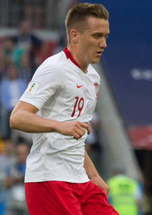

Ezzcoins › Player pages › Piotr Zieliński

Photo source
https://commons.wikimedia.org/wiki/File:Piotr_Zielinski_2018_(cropped).jpg
Licence: https://creativecommons.org/licenses/by-sa/3.0
Piotr Zieliński
82 CM · Lombardia FC · Serie A Enilive ·  Poland
Poland
No console price yet. Add this player to your watchlist on Ezzcoins: the most-watched players get a price every hour.
PAC77
SHO77
PAS81
DRI83
DEF70
PHY63
- Position
- CM (also CDM, CAM)
- Club
- Lombardia FC
- League
- Serie A Enilive
- Nation
- Poland
- Skill moves
- 3★
- Weak foot
- 4★
- Preferred foot
- Right
More from Lombardia FC
- 87
 Lautaro MartínezST
Lautaro MartínezST - 87
 Nicolò BarellaCM
Nicolò BarellaCM - 86Alessandro BastoniCB
- 86Federico DimarcoLB
- 85
 Hakan ÇalhanoğluCDM
Hakan ÇalhanoğluCDM - 85
 Marcus ThuramST
Marcus ThuramST - 83Ivan ProvedelGK
- 83
 Manuel AkanjiCB
Manuel AkanjiCB